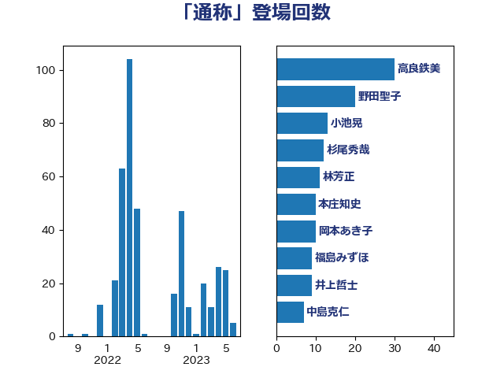

単語「通称」

| 高良鉄美 | 無所属 | 30 回 |
| 野田聖子 | 自由民主党 | 20 回 |
| 小池晃 | 日本共産党 | 13 回 |
| 杉尾秀哉 | 立憲民主党 | 12 回 |
| 林芳正 | 自由民主党 | 11 回 |
| 本庄知史 | 立憲民主党 | 10 回 |
| 岡本あき子 | 立憲民主党 | 10 回 |
| 福島みずほ | 社会民主党 | 9 回 |
| 井上哲士 | 日本共産党 | 9 回 |
| 中島克仁 | 立憲民主党 | 7 回 |
| 田村まみ | 国民民主党 | 6 回 |
| 金城泰邦 | 公明党 | 5 回 |
| 赤池誠章 | 自由民主党 | 5 回 |
| 葉梨康弘 | 自由民主党 | 5 回 |
| 横山信一 | 公明党 | 5 回 |
| 山口俊一 | 自由民主党 | 5 回 |
| 小倉將信 | 自由民主党 | 5 回 |
| 古川禎久 | 自由民主党 | 5 回 |
| 齋藤健 | 自由民主党 | 4 回 |
| 赤澤亮正 | 自由民主党 | 4 回 |
| 谷公一 | 自由民主党 | 4 回 |
| 石川博崇 | 公明党 | 4 回 |
| 打越さく良 | 立憲民主党 | 4 回 |
| 宮崎政久 | 自由民主党 | 4 回 |
| 上田清司 | 国民民主党 | 4 回 |
| 後藤茂之 | 自由民主党 | 3 回 |
| 川田龍平 | 立憲民主党 | 3 回 |
| 寺田静 | 無所属 | 3 回 |
| 鬼木誠 | 立憲民主党 | 2 回 |
| 高市早苗 | 自由民主党 | 2 回 |
| 足立康史 | 日本維新の会 | 2 回 |
| 米山隆一 | 立憲民主党 | 2 回 |
| 穀田恵二 | 日本共産党 | 2 回 |
| 礒崎哲史 | 国民民主党 | 2 回 |
| 田中健 | 国民民主党 | 2 回 |
| 比嘉奈津美 | 自由民主党 | 2 回 |
| 横沢高徳 | 立憲民主党 | 2 回 |
| 杉田水脈 | 自由民主党 | 2 回 |
| 新垣邦男 | 立憲民主党 | 2 回 |
| 山添拓 | 日本共産党 | 2 回 |
| 小西洋之 | 立憲民主党 | 2 回 |
| 宮本徹 | 日本共産党 | 2 回 |
| 宮口治子 | 立憲民主党 | 2 回 |
| 塩川鉄也 | 日本共産党 | 2 回 |
| 城井崇 | 立憲民主党 | 2 回 |
| 吉田統彦 | 立憲民主党 | 2 回 |
| 加田裕之 | 自由民主党 | 2 回 |
| 伊藤岳 | 日本共産党 | 2 回 |
| 音喜多駿 | 日本維新の会 | 1 回 |
| 青木愛 | 立憲民主党 | 1 回 |
| 阿部司 | 日本維新の会 | 1 回 |
| 金子恵美 | 立憲民主党 | 1 回 |
| 近藤昭一 | 立憲民主党 | 1 回 |
| 辻清人 | 自由民主党 | 1 回 |
| 谷田川元 | 立憲民主党 | 1 回 |
| 西村智奈美 | 立憲民主党 | 1 回 |
| 西村康稔 | 自由民主党 | 1 回 |
| 藤岡隆雄 | 立憲民主党 | 1 回 |
| 落合貴之 | 立憲民主党 | 1 回 |
| 菊田真紀子 | 立憲民主党 | 1 回 |
| 自見はなこ | 自由民主党 | 1 回 |
| 羽田次郎 | 立憲民主党 | 1 回 |
| 笠浩史 | 無所属 | 1 回 |
| 神谷政幸 | 自由民主党 | 1 回 |
| 神田潤一 | 自由民主党 | 1 回 |
| 石川香織 | 立憲民主党 | 1 回 |
| 石垣のりこ | 立憲民主党 | 1 回 |
| 田村智子 | 日本共産党 | 1 回 |
| 甘利明 | 自由民主党 | 1 回 |
| 牧島かれん | 自由民主党 | 1 回 |
| 渡辺猛之 | 自由民主党 | 1 回 |
| 渡辺創 | 立憲民主党 | 1 回 |
| 浜野喜史 | 国民民主党 | 1 回 |
| 浜田聡 | NHK党 | 1 回 |
| 浅田均 | 日本維新の会 | 1 回 |
| 河野太郎 | 自由民主党 | 1 回 |
| 河西宏一 | 公明党 | 1 回 |
| 櫻井周 | 立憲民主党 | 1 回 |
| 櫛渕万里 | れいわ新選組 | 1 回 |
| 榛葉賀津也 | 国民民主党 | 1 回 |
| 森屋隆 | 立憲民主党 | 1 回 |
| 梅谷守 | 立憲民主党 | 1 回 |
| 梅村みずほ | 日本維新の会 | 1 回 |
| 本村伸子 | 日本共産党 | 1 回 |
| 朝日健太郎 | 自由民主党 | 1 回 |
| 徳永久志 | 無所属 | 1 回 |
| 市村浩一郎 | 日本維新の会 | 1 回 |
| 岸真紀子 | 立憲民主党 | 1 回 |
| 岸田文雄 | 自由民主党 | 1 回 |
| 岩谷良平 | 日本維新の会 | 1 回 |
| 山田太郎 | 自由民主党 | 1 回 |
| 山本佐知子 | 自由民主党 | 1 回 |
| 山崎誠 | 立憲民主党 | 1 回 |
| 山岸一生 | 立憲民主党 | 1 回 |
| 山岡達丸 | 立憲民主党 | 1 回 |
| 山口晋 | 自由民主党 | 1 回 |
| 山井和則 | 立憲民主党 | 1 回 |
| 小田原潔 | 自由民主党 | 1 回 |
| 小森卓郎 | 自由民主党 | 1 回 |
| 寺田稔 | 自由民主党 | 1 回 |
| 宮路拓馬 | 自由民主党 | 1 回 |
| 宮本岳志 | 日本共産党 | 1 回 |
| 奥下剛光 | 日本維新の会 | 1 回 |
| 太栄志 | 立憲民主党 | 1 回 |
| 大西健介 | 立憲民主党 | 1 回 |
| 大塚耕平 | 国民民主党 | 1 回 |
| 塩田博昭 | 公明党 | 1 回 |
| 國重徹 | 公明党 | 1 回 |
| 勝目康 | 自由民主党 | 1 回 |
| 伊波洋一 | 無所属 | 1 回 |
| 丸川珠代 | 自由民主党 | 1 回 |
| 中川郁子 | 自由民主党 | 1 回 |
| 一谷勇一郎 | 日本維新の会 | 1 回 |
| おおつき紅葉 | 立憲民主党 | 1 回 |